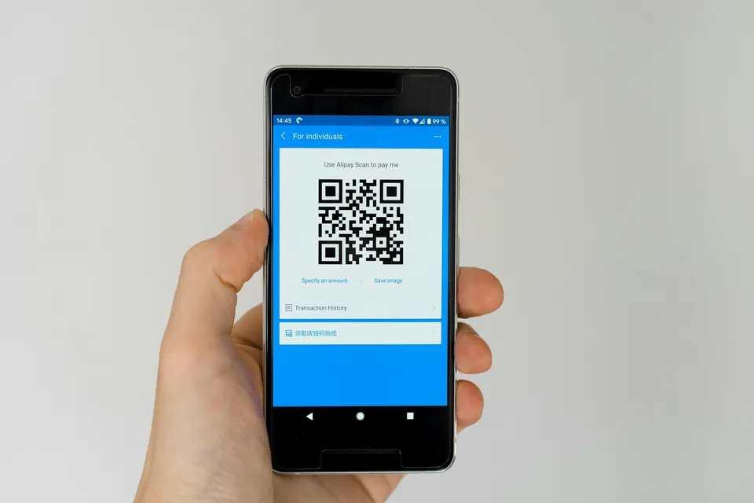

Approach
Seed-to-garment traceability starts at the farm
Traceability means being able to show where a product's raw material came from, and how it got from there to here. For cotton, that chain runs from the farm, through the gin, spinning mill and fabric mill, to the garment. Every link has to be recorded.
Why buyers ask for it
Brands now have to back up what they say about their products. In the EU, new rules on environmental claims apply from 27 September 2026, and sustainability reporting and due-diligence requirements put more weight on supply-chain data. For a Pakistani mill, the question from the buyer is increasingly specific: which farms?
Where traceability usually breaks
At the beginning. Mills and certification bodies keep records from the gin onwards. But if the farm-level records are weak, every document that follows rests on a weak foundation:
- unclear farmer lists
- estimated plot sizes
- unrecorded inputs
- cotton from different sources mixed before the gin
What we do at the farm end
- Farmer and plot registrationWho grows, where and on how much land, with farms and plots mapped
- Season recordsInputs, practices, inspections and estimated yields
- Internal inspectionEvery farm, by our ICIs, before certification
- Sale recordsCertified seed cotton sold to certified ginners, kept separate from conventional cotton
- Hand-overRecords the ginner and mill can use for certification paperwork and their buyers' questions
Certification bodies issue the transaction certificates that move with certified goods along the chain. Our job is to make sure what they certify at the start is solid.
In practice
Mahmood Textile Mills, a Pakistan Stock Exchange-listed company, names its "traceable Seed-to-Garment contract" with AgReCir (spelled "AgRiCer" in the document) in its FY-25 corporate briefing. It lists this as its response to rising EU sustainability compliance costs.
Questions
Does traceability need special technology?
Technology helps, but the essential part is accurate records at the farm and a clean separation of certified and conventional cotton. Any digital system is only as good as the data collected in the field. We use digital farm records and plot mapping so that data can be checked. Smart agriculture →
Can you work with our traceability platform?
Yes. We collect and check the farm-level data, and it can feed the system you already use.
What's a transaction certificate?
It's a document issued by a certification body confirming that a shipment of certified goods moved from one certified company to another. It's how GOTS- and OCS-certified material stays traceable along the chain.

Planning next season's certified cotton?
Talk to us about farmer groups, inspections and ginner linkage before sowing starts.